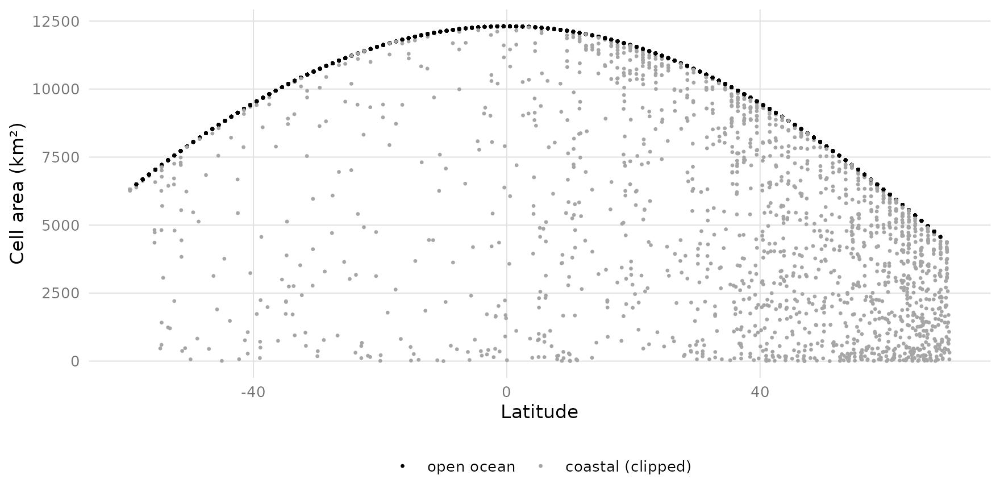
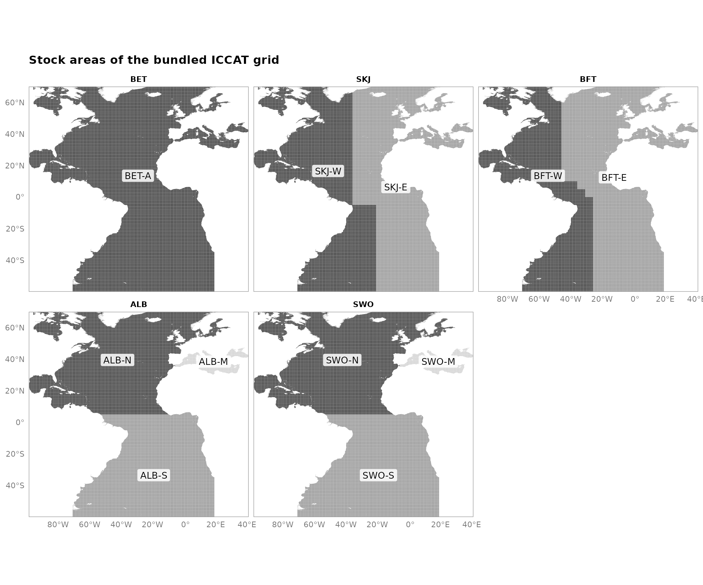
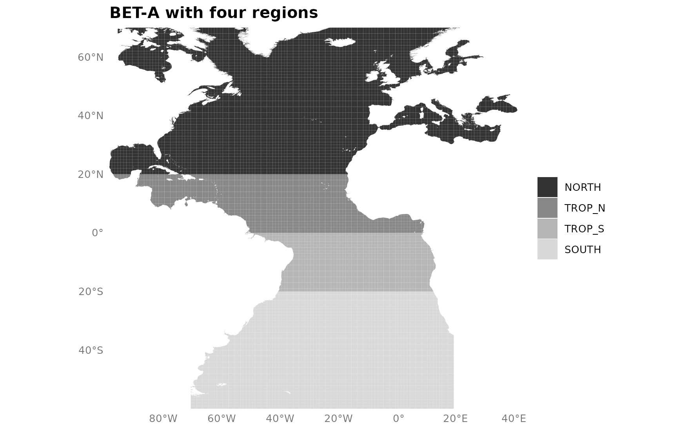
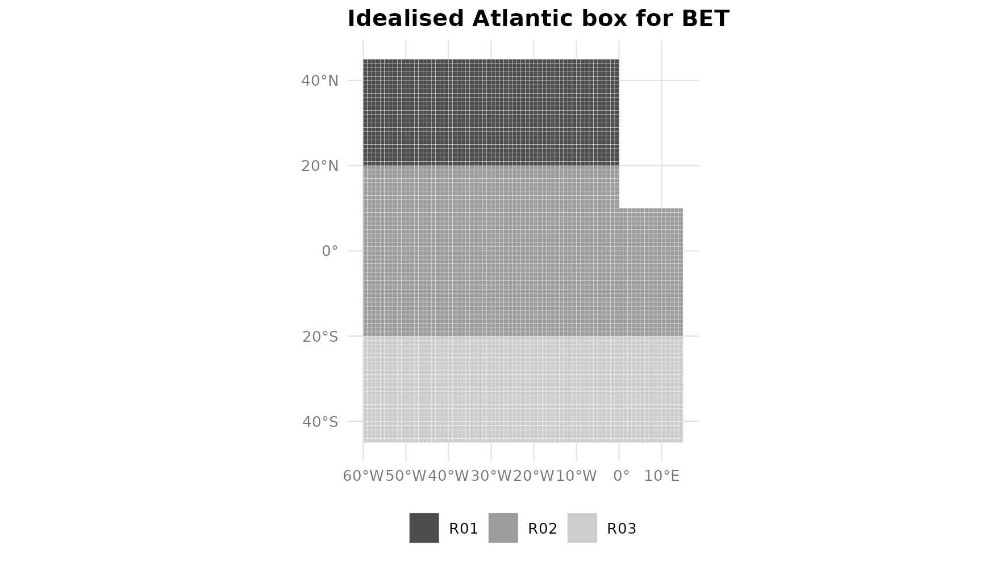

Spatial domain: ICCAT grid, stock areas and regions
Source:vignettes/articles/spatial-domain.Rmd
spatial-domain.RmdEvery simulation runs on a spatial domain: a set of
cells on a regular 1x1 degree lattice, each with an identifier, a
representative point, a geodesic area and a latitudinal region. A domain
is an object of class om_domain with the same components as
the domain of Experimento 02:
| component | content |
|---|---|
cells |
one row per cell: Cell_ID, Longitude,
Latitude, Nominal_lon0,
Nominal_lat0 (south-west corner of the nominal cell),
Row, Col (lattice indices),
Area_km2, Area_frac (fraction of the nominal
cell that is sea), Region
|
geometry |
sf polygons of the cells (used only by maps) |
lattice |
origin and size of the integer lattice used by the Gaussian random fields |
regions |
latitude breaks and labels of the
regions |
meta |
provenance (source, stock code, area method, bounding box, …) |
The bundled ICCAT 1x1 grid
The package ships the 10,051 cells of the official ICCAT 1x1 grid
(layer grids_01x01 of the ICCAT GIS GeoPackage). The cells
are clipped by the coastline and their areas are geodesic.
om_domain_iccat() builds a domain from it without any GIS
file. For the BET-A stock area the result is exactly the domain of
Experimento 02:
dom <- om_domain_iccat("BET-A")
#> domain BET-A: 10051 cells | lattice 130 x 140
dom
#> <pelagicOM spatial domain> BET-A (iccat)
#> 10051 cells | lattice 130 x 140 | lon -97.4 to 41.3 | lat -59.5 to 69.9
#> regions: R01 = 4519, R02 = 2368, R03 = 3164
#> total area: 88,756,675 km2 | geometry: yes
head(dom$cells)
#> Cell_ID Longitude Latitude Nominal_lon0 Nominal_lat0 Row Col Area_km2
#> 1 5100000 0.5 0.5 0 0 61 99 12308.78
#> 2 5100001 1.5 0.5 1 0 61 100 12308.78
#> 3 5100002 2.5 0.5 2 0 61 101 12308.78
#> 4 5100003 3.5 0.5 3 0 61 102 12308.78
#> 5 5100004 4.5 0.5 4 0 61 103 12308.78
#> 6 5100005 5.5 0.5 5 0 61 104 12308.78
#> Area_frac Region
#> 1 1 R02
#> 2 1 R02
#> 3 1 R02
#> 4 1 R02
#> 5 1 R02
#> 6 1 R02
str(dom$lattice)
#> List of 4
#> $ lon0_min: num -98
#> $ lat0_min: num -60
#> $ n_col : num 140
#> $ n_row : num 130Coastal cells are only partly sea (Area_frac < 1) and
high-latitude cells are smaller. The geodesic area is therefore what
turns density (t/km²) into biomass (t):
ggplot(dom$cells, aes(Latitude, Area_km2, colour = Area_frac < 1)) +
geom_point(size = 0.4) +
scale_colour_manual(values = c("black", "grey65"),
labels = c("open ocean", "coastal (clipped)")) +
labs(y = "Cell area (km²)", colour = NULL) +
theme_pub()
ICCAT stock areas
Every stock area of the ICCAT GeoPackage is available. A cell belongs to a stock area when a point on its surface lies inside the stock polygon. BET-A is identical to the ICCAT Convention area, so it keeps all cells, as in Experimento 02.
knitr::kable(iccat_stocks()[, c("stock_code", "name", "n_cells")])| stock_code | name | n_cells |
|---|---|---|
| ALB-M | Albacore tuna stock area ALB-M | 431 |
| ALB-N | Albacore tuna stock area ALB-N | 5070 |
| ALB-S | Albacore tuna stock area ALB-S | 4550 |
| BFT-E | Atlantic bluefin tuna stock area BFT-E | 5853 |
| BFT-W | Atlantic bluefin tuna stock area BFT-W | 4198 |
| SAI-E | Atlantic sailfish stock area SAI-E | 5308 |
| SAI-W | Atlantic sailfish stock area SAI-W | 4743 |
| WHM-A | Atlantic white marlin stock area WHM-A | 10051 |
| BET-A | Bigeye tuna stock area BET-A | 10051 |
| BUM-A | Atlantic blue marlin stock area BUM-A | 10051 |
| SPF-E | Longbill spearfish stock area SPF-E | 5308 |
| SPF-W | Longbill spearfish stock area SPF-W | 4743 |
| SKJ-E | Skipjack tuna stock area SKJ-E | 5098 |
| SKJ-W | Skipjack tuna stock area SKJ-W | 4952 |
| SWO-M | Swordfish stock area SWO-M | 431 |
| SWO-N | Swordfish stock area SWO-N | 5070 |
| SWO-S | Swordfish stock area SWO-S | 4550 |
| YFT-A | Yellowfin tuna stock area YFT-A | 10051 |
| AT-NE | AT-NE | 2454 |
| AT-NW | AT-NW | 2616 |
| AT-SE | AT-SE | 2423 |
| AT-SW | AT-SW | 2127 |
| MD | MD | 431 |
| ICCAT | ICCAT convention area | 10051 |
BET is a single Atlantic stock (BET-A, all cells). Other species are split into stock areas. The map below draws one panel per species, with each stock area in its own tone and its code written over it:
stock_cells <- function(codes) {
g <- iccat_geometry()
do.call(rbind, lapply(codes, function(cd) {
x <- g[g$Cell_ID %in% om_domain_iccat(cd, geometry = FALSE,
verbose = FALSE)$cells$Cell_ID, ]
x$stock <- cd
x$species <- sub("-.*$", "", cd)
x
}))
}
codes <- c("BET-A", "SKJ-W", "SKJ-E", "BFT-W", "BFT-E",
"ALB-N", "ALB-S", "ALB-M", "SWO-N", "SWO-S", "SWO-M")
m <- stock_cells(codes)
m$species <- factor(m$species, levels = c("BET", "SKJ", "BFT", "ALB", "SWO"))
## tones by position of the stock within its species
pos <- ave(seq_along(codes), sub("-.*$", "", codes), FUN = seq_along)
tones <- setNames(c("grey35", "grey65", "grey85")[pos], codes)
lab <- do.call(rbind, lapply(codes, function(cd) {
cl <- m[m$stock == cd, ]
i <- om_domain_iccat(cd, geometry = FALSE, verbose = FALSE)$cells
data.frame(stock = cd, species = cl$species[1],
lon = median(i$Longitude), lat = median(i$Latitude))
}))
ggplot(m) +
geom_sf(aes(fill = stock), colour = NA) +
geom_label(data = lab, aes(lon, lat, label = stock), size = 3,
linewidth = 0, fill = "white", alpha = 0.85) +
scale_fill_manual(values = tones, guide = "none") +
facet_wrap(~species, ncol = 3) +
coord_sf(expand = FALSE) +
labs(x = NULL, y = NULL, title = "Stock areas of the bundled ICCAT grid") +
theme_pub(base = 9) +
theme(panel.grid.major = element_blank(),
panel.border = element_rect(colour = "grey60", fill = NA))
Latitudinal regions
Regions are latitude bands defined by ascending
region_breaks and by region_labels listed
from north to south. The default is the rule of
Experimento 02: R01 for lat > 20, R02 for -20 ≤ lat ≤ 20 and R03 for
lat < -20.
classify_regions(c(-35, -20, 0, 20, 35))
#> [1] R03 R02 R02 R02 R01
#> Levels: R01 R02 R03
table(dom$cells$Region)
#>
#> R01 R02 R03
#> 4519 2368 3164Any number of bands can be used. For example, the BET-A area can be split at the equator into four regions. Regions without cells in a domain are dropped with a message.
dom4 <- om_domain_iccat("BET-A", region_breaks = c(-20, 0, 20),
region_labels = c("NORTH", "TROP_N", "TROP_S", "SOUTH"))
#> domain BET-A: 10051 cells | lattice 130 x 140
table(dom4$cells$Region)
#>
#> NORTH TROP_N TROP_S SOUTH
#> 4519 1307 1061 3164
g <- dom4$geometry
g$Region <- dom4$cells$Region
ggplot(g) +
geom_sf(aes(fill = Region), colour = NA) +
scale_fill_grey(start = 0.2, end = 0.85) +
coord_sf(expand = FALSE) +
labs(title = "BET-A with four regions") +
theme_pub() + theme(panel.grid.major = element_blank(),
legend.position = "right")
The regions are part of the domain. They are copied into the configuration of the simulation, and they decide which cells each fleet can fish and how the scenario data sets are filtered.
Reading a GeoPackage
om_domain_from_gpkg() is the function that built the
domain of Experimento 02 from ICCAT_gis.gpkg. It works as
follows:
- It reads the grid layer and a stock-area layer.
- It repairs invalid geometries.
- It keeps the cells that belong to the stock.
- It computes geodesic areas with
lwgeom. - It derives the lattice indices and the regions.
With the defaults it returns the cells, lattice and polygons of Experimento 02 exactly (this is checked by the package tests).
gpkg <- "Experimento_02/ICCAT/ICCAT_gis.gpkg"
inspect_geopackage(gpkg, layers = "bigeye_tuna_stock_areas")
dom_bet <- om_domain_from_gpkg(gpkg) # BET-A: the domain of Exp. 02
identical(dom_bet$cells, om_domain_iccat()$cells)
#> [1] TRUEThe selection argument chooses the rule:
-
"intersects"keeps every cell that touches the stock polygon. This is the rule of Experimento 02 and is adequate when the stock area is the whole Convention area. -
"point_on_surface"keeps a cell when a point on its surface lies inside the polygon. Cells that only share an edge with the boundary of a smaller stock area are left out, and the cells are the same as those ofom_domain_iccat().
For BET-A, which covers the whole Convention area, both rules keep the same 10,051 cells.
A simulation can also read the GeoPackage itself, through
spatial$source = "gpkg" in the biomass configuration:
cfg <- om_biomass_config("BET_ICCAT",
spatial = list(source = "gpkg", gpkg = gpkg))
sim <- simulate_biomass(cfg) # identical to the bundled-grid runSynthetic grids
om_domain_grid() builds a rectangular 1x1 grid. With it,
the BET operating model can run on an idealised Atlantic, without
coastline, for teaching, tests or to isolate the effect of the coast.
exclude removes cells through a function of the cell
centres; here it removes a block of “land” in the north-east. Areas are
geodesic on the WGS84 ellipsoid, computed exactly as for the ICCAT
grid.
box <- om_domain_grid(lon = c(-60, 15), lat = c(-45, 45),
exclude = function(lon, lat) lon > 0 & lat > 10)
#> synthetic domain: 6225 cells | lattice 90 x 75
box
#> <pelagicOM spatial domain> GRID (grid)
#> 6225 cells | lattice 90 x 75 | lon -59.5 to 14.5 | lat -44.5 to 44.5
#> regions: R01 = 1500, R02 = 2850, R03 = 1875
#> total area: 69,312,346 km2 | geometry: yes
g <- box$geometry; g$Region <- box$cells$Region
ggplot(g) + geom_sf(aes(fill = Region), colour = "white", linewidth = 0.05) +
scale_fill_grey(start = 0.3, end = 0.8) +
labs(title = "Idealised Atlantic box for BET") + theme_pub()
geodesic_area_km2() gives the area of any polygon in
geographic coordinates:
cell <- sf::st_sfc(sf::st_polygon(list(cbind(c(0, 1, 1, 0, 0),
c(0, 0, 1, 1, 0)))), crs = 4326)
geodesic_area_km2(cell)
#> [1] 12308.78Using a domain
By default simulate_biomass() builds the domain
described in cfg$spatial (the bundled grid and the BET-A
area for the BET_ICCAT preset). Any other domain can be
passed explicitly. Its regions then take precedence over the ones in the
configuration:
sim <- simulate_biomass(om_biomass_config("BET_ICCAT"), domain = dom4)See Tuning the operating model for complete examples with other stock areas.